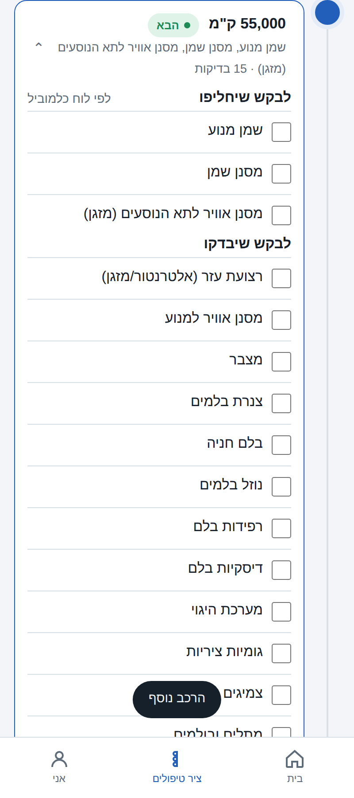
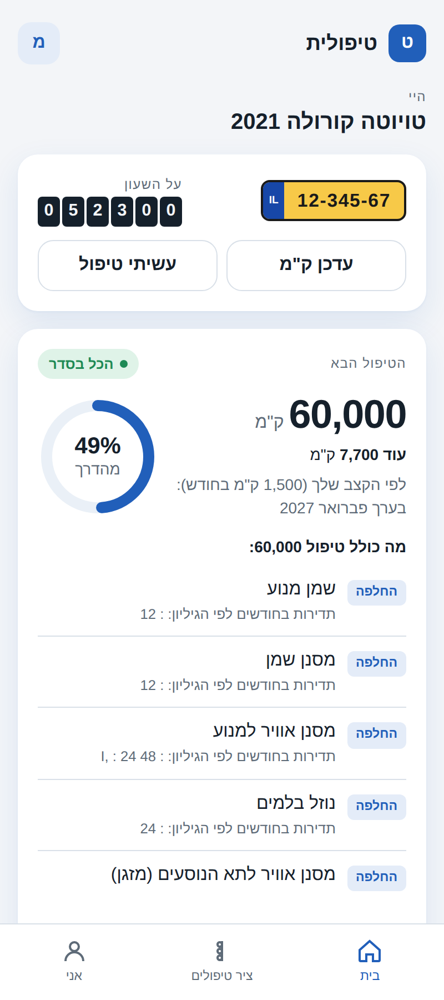

כל הטיפולים על ציר אחד
מה כבר נעשה, מה הבא בתור ומה מחכה בהמשך. כל טיפול נפתח לרשימה מלאה.

מספר רכב אחד, ולוח הטיפולים של היבואן בישראל: מה הבא בתור, מה הוא כולל ומה לבקש במוסך.

לדוגמה: טויוטה קורולה 2021, עם 52,300 ק"מ על השעון
לפי לוח הטיפולים של יוניון מוטורס לדגם הזה.
לפי מספר הרישוי, ממאגר הרכב הממשלתי: יצרן, דגם, שנת ייצור ומנוע.
לפי הקילומטראז' והזמן שעבר, מול לוח הטיפולים של היבואן בישראל.
רשימה של מה להחליף ומה לבדוק בטיפול הזה, שאפשר לעבור עליה מול המכונאי.
מה כבר נעשה, מה הבא בתור ומה מחכה בהמשך. כל טיפול נפתח לרשימה מלאה.

כשהמרווח של היבואן בישראל שונה מהמרווח העולמי, הולכים לפי היבואן.
כל לוח נבנה מגיליון האחזקה של היבואן ומושווה אליו שורה אחר שורה.
רכבי בנזין והיברידיים עד גיל 20. מתחילים מהנפוצים בכבישים בישראל ומוסיפים בהדרגה. דגם שלא ברשימה אפשר לבחור ידנית באפליקציה.
לא. אפשר להמשיך כאורח והרכבים נשמרים במכשיר. התחברות עם Google שומרת אותם גם בענן, כדי שלא ילכו לאיבוד כשמחליפים טלפון.
זיהוי הרכב נעשה מול מאגר כלי הרכב של משרד התחבורה באתר data.gov.il. לוחות הטיפולים נבנים לפי גיליונות האחזקה של היבואנים בישראל, ונכתבים במילים שלנו.
אם הדגם זוהה אבל עוד אין לו לוח, אפשר לבחור ידנית דגם קרוב. דגמים חדשים נכנסים לפי כמה הם נפוצים בכביש.
עדיין לא. בשלב הזה טיפולית תומכת ברכבי בנזין והיברידיים בלבד.
לא. טיפולית עוזרת לדעת מה לבקש ומה לוודא. את העבודה עצמה עושה המוסך, ואת ההחלטה עושים אתם.